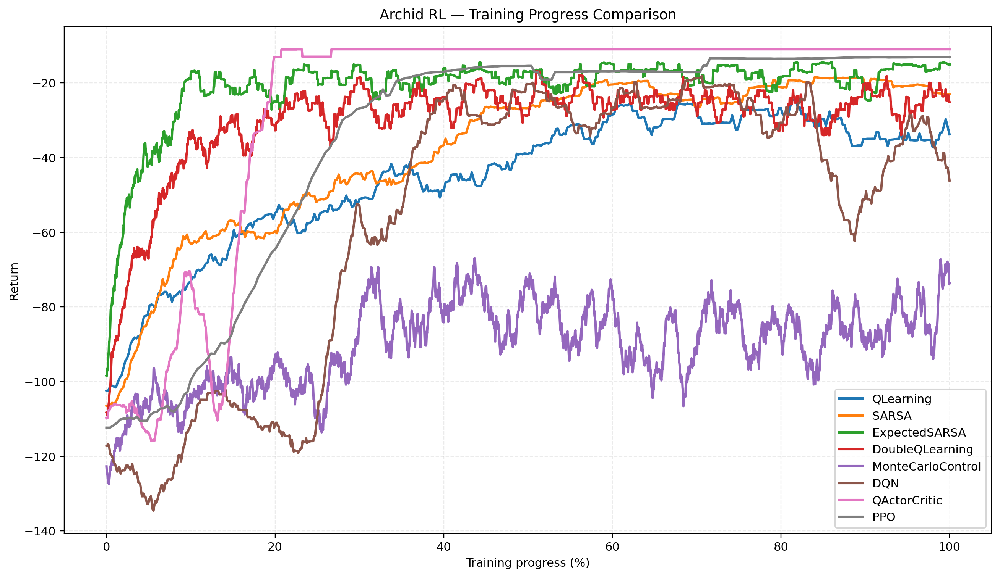

Archid
Archid is a machine learning library focused on building,
training, and experimenting with neural networks and
reinforcement learning systems. It is designed to provide
higher-level tools for machine learning while remaining
flexible enough to experiment with different training
methods and algorithms.
What it includes
- Neural network training and inference
- Supervised learning utilities
- Reinforcement learning algorithms
- Actor-critic architectures
- Policy and value-based learning methods
- Experience and transition handling
- Environment interfaces for reinforcement learning
-
Built on top of the
Euclid
machine learning framework
Why Archid?
Archid is intended to sit at a higher level than the
underlying tensor and automatic differentiation system.
Instead of focusing primarily on implementing tensors,
mathematical operations, and computational graphs,
Archid focuses on the systems used to actually train
machine learning models.
The project currently explores both conventional
supervised learning and reinforcement learning, with an
emphasis on keeping the underlying components modular.
Reinforcement Learning
Archid includes an experimental reinforcement learning
framework for implementing and comparing different
learning algorithms.
Environments produce experiences which can be represented
as transitions containing states, actions, rewards, and
subsequent states. These experiences are then passed to
algorithms which determine how the agent should update
its behavior.
The architecture is designed to support different classes
of algorithms, including value-based methods and
actor-critic methods.
Projects Built with Archid
Cliff Walking

Cliff Walking is used as a small reinforcement learning
benchmark for testing Archid's algorithms and training
infrastructure.
Multiple algorithms can be trained on the same environment
and compared using their episode rewards and learning
behavior.
This provides a simple environment for experimenting with
value-based and policy-based reinforcement learning before
moving to more complex tasks.
Custom Reinforcement Learning Experiments

Archid is also used to experiment with custom reinforcement
learning algorithms, environments, and training methods.
The modular design makes it possible to change the learning
algorithm without rewriting the environment or experience
pipeline.
Neural Network Training

Archid can also be used for conventional neural network
training, providing higher-level training functionality
on top of the underlying machine learning framework.
This allows the same underlying neural network components
to be used across different training approaches.
```